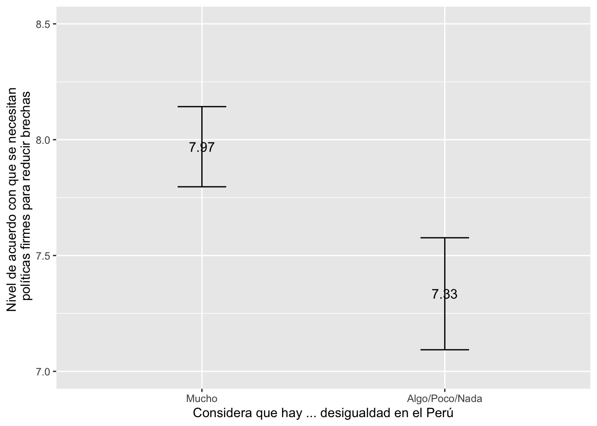

Práctica dirigida 3

FACULTAD DE CIENCIAS SOCIALES - PUCP
Curso: POL 278 - Estadística para el análisis político 1 | Semestre
2023 - 1
1.Intervalos de confianza
Primero, recordemos que en esta sesión nos estamos adentrando en la estadística inferencial. El objetivo de esta es determinar una aproximación del parámetro poblacional a partir de la data de una muestra representativa.
Revisemos algunos conceptos:
Estimador puntual: un número que es nuestra predicción del parámetro
Intervalo de confianza: un intervalo de números basado en la distribución de la data observada de la muestra dentro de la cual se cree que estaría el parámetro poblacional.
IC = estimador puntual +-/margen de error
Nivel de confianza: es la probabilidad de que el parámetro se encuentre en ese intervalo.
Margen de error: mide qué tan precisa es la estimación del parámetro.
Error de muestreo: diferencia entre el valor calculado de un estadístico y valor real de un parámetro de la población.

Importancia
Los intervalos de confianza ofrecen una manera de estimar, con alta probabilidad, un rango de valores en el que se encuentra el parámetro de una determinada variable. Además, este describe la variabilidiad entre la medida obtenida en un estudio y la medida real de la población (valor real). Un intervalo de confianza de 90%/95%/99% nos indica que dentro del rango dado se encuentra el valor real de un parámetro con 90%/95%/99% de certeza. Recordemos también que existe una relación inversa entre la amplitud del intervalo de confianza y el tamaño muestral. Gracias al intervalo de confianza podemos determinar si la estimación es representativa de la población.
Sobre el nivel de confianza…
Si tenemos un nivel de confianza de 95%, quiere decir que si realizamos 100 veces el mismo procedimiento de muestreo y calculamos los estadísticos de interés, 95 veces obtendremos los resultados en el intervalo calculado. Los mismo ocurriría si realizamos el cáldulo con un 99% de confianza. Al momento de decidir el nivel de confianza debemos tener presente una regla: a mayor nivel de confianza, menor será la precisión ya que el intervalo es más amplio.
2.Intervalos de confianza para una media
Carguemos la data ENADES2022.dta
La Encuesta Nacional de Percepción de Desigualdades o ENADES ha sido elaborada por el Instituto de Estudios Peruanos (IEP) y Oxfam. Como lo indica su nombre, este estudio se enfoca en analizar la percepción de diferentes formas de desigualdad en el país. Esta incluye indicadores que permiten medir la magnitud de brechas sociales y políticas: diferencias de género, clase y relaciones étnico raciales, y dimensiones subjetivas de desigualdad y sus vínculos con orientaciones políticas. En este caso, nuestra unidad de análisis sería cada persona que completó la encuesta.
library(rio) #Convocamos el paquete
data=import("ENADES-2022.dta") Recordemos la fórmula para hallar el intervalo de confianza para una media es

Hallemos el intervalo de confianza para la media de la variable “ABros4”.
El enunciado de la pregunta es indicar en una escala de 1 a 10, donde 1 significa “Muy en desacuerdo” y 10 significa “Muy de acuerdo, ¿qué tan de acuerdo o en desacuerdo se encuentra con la afirmación”El Estado peruano debe implementar políticas firmes para reducir la desigualdad de ingresos entre ricos y pobres”.
class(data$ABros4) #Revisemos que nuestra variale esté bien clasificada## [1] "numeric"ciMean, del paquete lsr, es la función que calcula el intervalo de confianza de una media.
library(lsr)
ic_media = ciMean(data$ABros4, na.rm = TRUE) #con el último argumento indicamos no tomar en consideracion los valores perdidos (NA)
ic_media## 2.5% 97.5%
## [1,] 7.54425 7.828429Nuestra media poblacional se encuentra entre 7.54 y 7.82. Esto quiere decir que la estimación del intervalo indica que tenemos un 95% de certeza de que el valor poblacional del nivel de acuerdo con la afirmación “El Estado peruano debe implementar políticas firmes para reducir la desigualdad de ingresos entre ricos y pobres” se encuentra entre 7.5 y 7.8.
3.Intervalos de confianza para una proporción
Tengamos en consideración que para poder hallar el intervalo de confianza para una proporción debemos determinar nuestro caso de éxtio. Asimismo, para hallar el intervalo de confianza para una proporción nuestra variable debe ser categórica y debe representar una variable dicotómica; es decir, una variable con solo dos categorías posibles: votó/no votó; sí/no, etc.
Recordemos la fórmula para hallar el intervalo de confianza para una proporción

Hallemos el intervalo de confianza para la proporción de las personas que opinan que hay mucha desigualdad económica en el Perú.
Para ello trabajaremos con la variable P04: ¿Qué tal desigual crees que es el Perú económicamente? Las alternativas van del 1 al 4, donde 1 es mucho y 4 nada.
Un paso previo es asegurarnos que nuestra variable es dicotómica y tener presente nuestro caso de éxito. En este caso, nuestra variable tiene cuatro posibles valores, es por eso que debemos recodificar la variable de tal modo que el valor 1 se quede como 1, y todos los demás valores se conviertan en 0.
class(data$p04)## [1] "numeric"data$p04=as.factor(data$p04)
table(data$p04) #Asegurémonos de los valores##
## 1 2 3 4
## 868 265 275 85Para recodificar podemos hacer uso del comando recode, que es parte del dplyr/tidyverse.
library(tidyverse)
data = data %>%
mutate(p04_1=recode(p04, '1' = '1', .default = '0'))
table(data$p04_1) #Confirmemos que se realizó correctamente la recategorización##
## 1 0
## 868 625Agreguemos etiquetas a nuestros valores
data$p04_1=factor(data$p04_1,
levels = levels(data$p04_1),
labels = c("Mucho","Algo/Poco/Nada"),
ordered = F)Para poder encontrar el intervalo de confianza para la proporción de personas que opinan que hay mucha desigualdad en Perú, necesitamos tener muy claro la frecuencia de nuestro caso de éxtio y del total de casos.
table(data$p04_1)#realizamos una tabla de frecuencias##
## Mucho Algo/Poco/Nada
## 868 625x = 868 #almacenamos en "x" la frecuencia de nuestro caso de éxito
n = 868 + 625 #almacenamos en "n" el total de casosHallamos el invervalo de confianza para una proporción con el comando prop.test
ic_prop = prop.test(x,n)
ic_prop #llamamos a ic_prop para visualizar los resultados##
## 1-sample proportions test with continuity correction
##
## data: x out of n, null probability 0.5
## X-squared = 39.226, df = 1, p-value = 3.775e-10
## alternative hypothesis: true p is not equal to 0.5
## 95 percent confidence interval:
## 0.5558413 0.6064950
## sample estimates:
## p
## 0.5813798Esto quiere decir que tenemos un 95% de certeza de que, en la población, el porcentaje de personas que considera que existe mucha desigualdad en el Perú oscila entre el 55.6% y 60.6% .
3.Intervalo de confianza de una media según grupo
Hallemos el intervalo de confianza para el nivel de acuerdo con que “El Estado peruano debe implementar políticas firmes para reducir la desigualdad de ingresos entre ricos y pobres” según si considera que existe mucha desigualdad o no en el Perú. Para ello usaremos el comando group.CI del paquete Rmisc
library(Rmisc)
ic_grupo = group.CI(ABros4~p04_1,data)
ic_grupo## p04_1 ABros4.upper ABros4.mean ABros4.lower
## 1 Mucho 8.142751 7.969732 7.796714
## 2 Algo/Poco/Nada 7.576645 7.334951 7.093258Según nuestra tabla, podemos afirmar que hay un 95% de probabilidad de que a nivel poblacional la media del grupo que considera que hay mucha desigualdad en el Perú está de acuerdo en mayor medida con que el Estado debe implementar políticas firmes para reducir la desigualdad, a comparación de lo que no se consideran que hay mucha desigualdad.
Grafiquemos nuestros resultados.
ggplot(ic_grupo, aes(x= p04_1, y =ABros4.mean)) +
geom_errorbar(aes(ymin=ABros4.lower, ymax=ABros4.upper), width = 0.2)+
geom_text(aes(label=paste(round(ABros4.mean, 2))), size=4)+
xlab("Considera que hay ... desigualdad en el Perú") + ylab("Nivel de acuerdo con que se necesitan \n políticas firmes para reducir brechas")+
ylim(7, 8.5)
¿Qué podemos extraer del gráfico?
Ejercicio
Trabajemos con la variable p03_1: nivel de acuerdo con la frase “En el Perú todos tienen iguales oportunidades para salir de la pobreza”, va del 1 (muy en desacuerdo) al 10 (muy de acuerdo)
¿Cuál es el intervalo de confianza de la media de la variable?
¿ Cuál es la diferencia del intervalo de confianza de la media según región natural? (variable region)